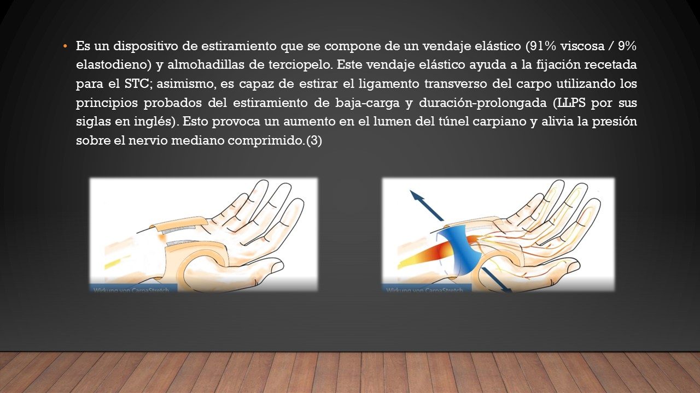
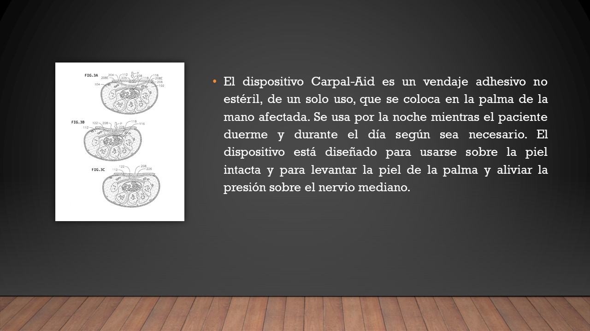
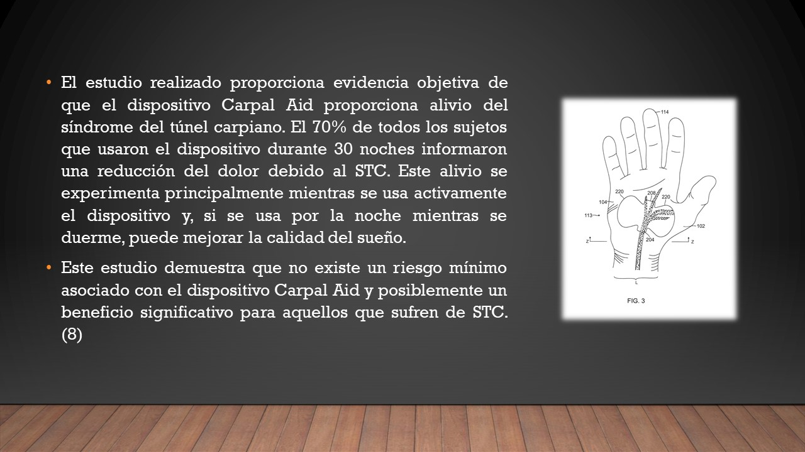

Estado del arte
Tratamientos
Guante táctil con sensores para la detección de fuerza y movimiento


Sistema de apoyo de rehabilitación para pacientes con STC usando un teléfono inteligente


CARPASTRETCH®

Diseño e implementación de un exoesqueleto de apoyo para rehabilitación del síndrome de túnel carpiano


Diseño integral de una órtesis para el tratamiento del síndrome del túnel del carpo


Banda de compresión para tratar el síndrome del túnel carpiano


Carpal Rx


Carpal Aid
 
Tabla de requerimientos